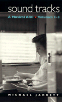

<body bgcolor="#FFFFFF" text="#000000" link="#0000FF" vlink="#CC0000" alink="#CC0000"><center><hr width="350" size="1" align="center" noshade>A witty and astute reference book on popular music<hr width="350" size="1" align="center" noshade><p><a href="https://cdcshoppingcart.uchicago.edu/Cart/ChicagoBook.aspx?ISBN=9781566396417&&PRESS=temple" target="_top">Buy this book!</a> | <a href="https://cdcshoppingcart.uchicago.edu/Cart/Cart.aspx?PRESS=temple" target="_top">View Cart</a> | <a href="https://cdcshoppingcart.uchicago.edu/Cart/Cart.aspx?PRESS=temple" target="_top">Check Out</a></p><p></p></center><!--none//--><h1>Sound Tracks</h1>
<H2>A Musical ABC, Volumes 1-3</H2>
<h3>Michael Jarrett</h3>
<P>cloth 1-56639-641-7 $34.50, Oct 98, <FONT COLOR=#990033>Available</FONT>
<br>Electronic Book 1-43990-566-5 $34.50 <FONT COLOR=#990033>Available</FONT>
<BR> 304 pp
5.5x9
86&nbsp;halftones
</P><BLOCKQUOTE><I>"I can think of no better introduction to the critical theory that is now at the heart of popular music studies. Jarrett's book is erudite, enlightening, and consistently enjoyable."</I>
<br>&#151<b>Krin Gabbard</b>, author of <I>Jammin' at the Margins: Jazz and the American Cinema</I><I></I></BLOCKQUOTE>
<p>From ambient music to "Dixie" and Zulu Nation, from Sonny Rollins to the Beastie Boys and Elvis's tailor, <I>Sound Tracks</I> quick-shuttles like a jukebox on Saturday night. Alphabetically ordered, this collection of pithy definitions and extended meditations most resembles a boxed set of anthologized sounds compiled by an omnivore of music.
<p>Spinning off from the "Definition of Sound" column he wrote for <I>Pulse!</I> magazine, Michael Jarrett mixes astute music criticism, an engaging writing style, and a wicked sense of humor to produce three alphabets that will provoke readers to rethink all sorts of popular music. Inventive and whimsical, these small essays coalesce around a serious purpose-writing about contemporary culture in a way that is meaningful to electronic-age readers and listeners.
<p>Take, for example, the entry on <I>ambient music</I>: like all of the entries in the book, it is preceded by evocative album art and followed by lists of readings and recordings that amplify the definition;
this one lists related videos as well. But it also presents an interview with Carla Bley and Steve Swallow on the influential music of Erik Satie. Under the <I>ls</I>, producer George Avakian talks about how the
technology that made LPs possible changed the music industry, and Pat Metheny talks about the challenges of sequencing an LP from a musician's point of view. The entry for <I>Carol</I> (as in traditional songs for Christmas and the Middle Age dance craze) opens into a riff on cultural roots and survivals that invokes Chuck Berry's classic song.
<p>Whether it is read start to finish or sampled, <I>Sound Tracks</I> is a book that music lovers and students of contemporary culture will applaud.
<BR>&nbsp;<h2>Excerpt</h2><P>Excerpt available at <a href="http://www.temple.edu/tempress">www.temple.edu/tempress</a></p>
<BR>&nbsp;<h2>Reviews</h2>
<p><i>"Jarrett makes many valid points... </i>Sound Tracks<i> is profitable reading that is...always informative."</i>
<br>&#151<b><i>The Ozarks Mountaineer</i></b>
<BR>&nbsp;<h2>Contents</h2><P>
<p>Introduction
<p><b>Volume 1</b>
<br>ambient music
<br>bolton
<br>cool
<br>cool jazz
<br>"Dixie"
<br>EOM
<br>funk
<br>Genesis 11:1-9
<br>hyperacusis
<br>implied grunge
<br>jukebox
<br>Kasenetz & Katz
<br>LP
<br>muso
<br>Nudie
<br>old school
<br>pop vs. rock
<br><i>Quem quaeritis</i>
<br>reverb
<br>soul music
<br>tarantella
<br>ukulele
<br>virginal
<br>Whitney Houston syndrome
<br>X [Christ]
<br>Young, Neil
<br>zymo-xyl
<p><b>Volume 2</b>
<br>album
<br>alternative
<br>bebop chess
<br>Carol
<br>dancehall
<br>EML
<br>flamenco
<br>groove
<br>harmolodies
<br>importance
<br>improvise
<br>Jubal
<br>krautrock
<br>Leslie
<br>mbaqanga
<br>Mekons
<br>nigger
<br>Orpheus
<br>pedal steel
<br>quiz
<br>rockability
<br>ska
<br>trope
<br>urbane
<br>verity
<br>wah-wah pedal
<br>X [border radio]
<br>"Yodeling Cowboy"
<br>Zulu Nation
<p><b>Volume 3</b>
<br>authenticity
<br>bossa nova
<br>brush arbor
<br>croon
<br>DIDs
<br>doo-wop
<br>electromagnetic tape
<br>engineer
<br>falsetto
<br>gospel
<br>hard bop
<br>ictus
<br>jazz
<br>kick
<br>Leno, Jay
<br>minstrel cycle
<br>Nashville sound
<br>obbligato
<br>punk
<br>Qiana
<br>rhapsody
<br>shivaree
<br>soul jazz
<br>trainspotter
<br>Ursonate
<br>"venerable Frog"
<br>watusi
<br>X [variable]
<br>Yardbird
<br>zine
<p>Appendix: CD Covers
</P><BR>&nbsp;<H2>About the Author(s)</H2>
<table><tr><td valign="top"><img src="/tempress/authors/1410_au.gif" height="90" width="75"></td><td width="100%" valign="middle"><p><B>Michael Jarrett</B> is Associate Professor of English, Pennsylvania State University, York, and the author of <I>Drifting on a Read: Jazz as a Model for Writing</I> (forthcoming).</P></td></tr></table>
<BR><H2>Subject Categories</H2>
<p><A HREF="/tempress/general.html" TARGET="_top">General Interest</a>
<BR><A HREF="/tempress/music.html" TARGET="_top">Music and Dance</a>
</p>
<BR><h2 class="inpageheading">In the series</H2>
<P><I><a href="http://www.temple.edu/tempress/soundmatters.html" onMouseOver="window.status='Click for other books in this series!'; return true;" onMouseOut="window.status=''; return true;" target="_top">Sound Matters</a></i>, edited by Michael Jarrett.
</p><p>Using music as the entry point for cultural analysis, books in the series <I>Sound Matters</I>, edited by Michael Jarrett, seek to articulate the values, beliefs, and dreams of the societies that create it. This series invites project proposals whose interdisciplinary approaches to music and cultural analysis will result in innovative, provocative, and accessible results.</p>
<p align="center"><a href="https://cdcshoppingcart.uchicago.edu/Cart/ChicagoBook.aspx?ISBN=9781566396417&&PRESS=temple" target="_top">Buy this book!</a> | <a href="https://cdcshoppingcart.uchicago.edu/Cart/Cart.aspx?PRESS=temple" target="_top">View Cart</a> | <a href="https://cdcshoppingcart.uchicago.edu/Cart/Cart.aspx?PRESS=temple" target="_top">Check Out</a></p><p><font face="Arial" size="1"><a href="copyright.html" onMouseOver="window.status='Web Copyright Policy';return true;" onMouseOut="window.status=''" title="Web Copyright Policy">&copy;</a> 2015 <a href="http://www.temple.edu" target="new" onMouseOver="window.status='Link to Temple University home page';return true;" onMouseOut="window.status=''" title="Link to Temple University home page">Temple University</a>. All Rights Reserved. http://www.temple.edu/tempress/titles/1410_reg.html</font></p>